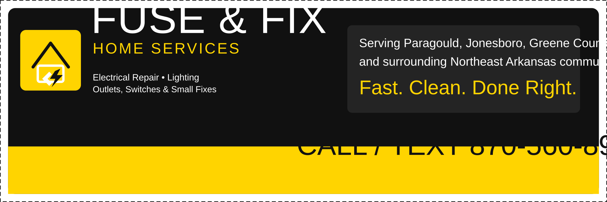

Electrical repair
Troubleshooting circuits, dead outlets, switches, flickering lights, and other common residential problems.
- Outlet and switch replacement
- Fixture swaps and installs
- Basic troubleshooting
Fuse & Fix Home Services helps homeowners in Paragould and nearby communities with lighting installs, outlet and switch replacement, troubleshooting, and smaller repair jobs that bigger companies do not want to fool with.

Straightforward residential work and punch-list repairs.
Built for local homeowners who want someone to actually call back.
Positioned to win residential repair work, smaller installs, and home maintenance calls.
Troubleshooting circuits, dead outlets, switches, flickering lights, and other common residential problems.
Interior and exterior light fixture installs, ceiling fan replacement, and freshening up older rooms.
Ideal for customers who have a few manageable jobs they want knocked out in one visit.
Call or text a photo and a quick description. That is the fastest way to get on the schedule.
This website is structured around the phrases homeowners actually search for: electrician in Paragould, outlet repair, light fixture installation, switch replacement, and handyman-style home repair nearby.
Every page pushes one action: call, text, or submit a booking request. No office address needed until the business is ready for it.